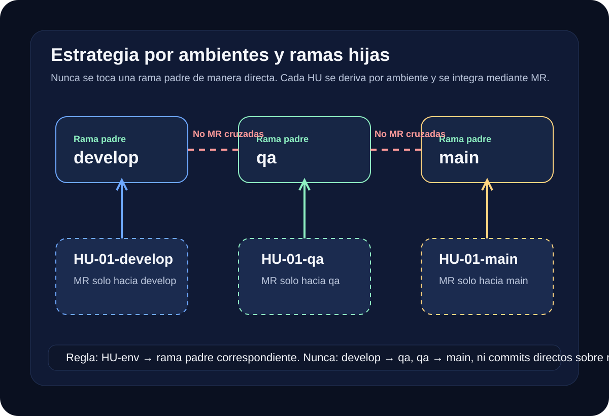
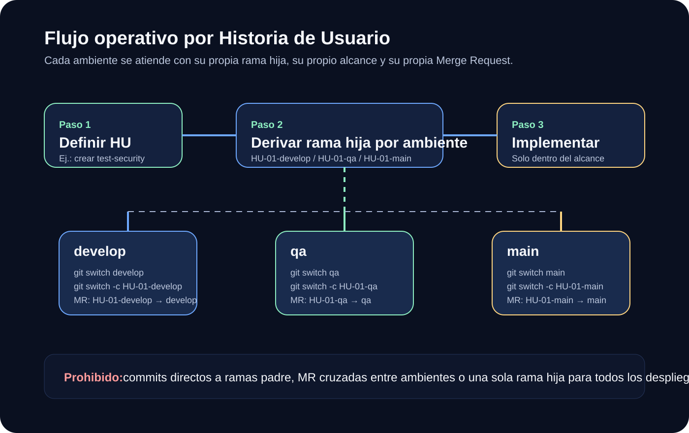

1. Contexto del repositorio
El repositorio trabaja con ambientes separados y una estrategia disciplinada de promoción de cambios.
- Repo:
using-env-github-activity - Ambientes:
develop,qa,main - Cambios planificados por HU
Repositorio
Estrategia de trabajo por ambientes develop, qa y main, basada en HU, ramas hijas por ambiente y Merge Requests controladas.

Estructura esperada
Este landing presenta el propósito del repositorio, la política de ambientes, la regla de no tocar ramas padre, el manejo de cambios mediante HU y el patrón correcto de ramas hijas por ambiente.
El repositorio trabaja con ambientes separados y una estrategia disciplinada de promoción de cambios.
using-env-github-activitydevelop, qa, mainLas ramas padre nunca se modifican directamente. Todo cambio debe entrar por una rama hija controlada.
Cada ambiente recibe una HU derivada de su propia rama padre, respetando el alcance planificado.
HU-01-develop → developHU-01-qa → qaHU-01-main → mainReglas del flujo
Ambiente de construcción y ajuste. Aquí pueden existir errores, cambios frecuentes y validaciones iniciales.
Recibe cambios cuando el desarrollo de la HU ya culminó y se requiere validar el comportamiento esperado.
Únicamente recibe cambios probados. Debe mantenerse estable y libre de trabajo en curso no verificado.
develop, qa o main.develop hacia qa o de qa hacia main.Flujo HU
Una HU no modifica ramas padre de forma directa. Se crean ramas hijas por ambiente y cada una abre su propia MR únicamente contra su rama padre correspondiente.

Si la HU-01 tiene como propósito crear la base de datos test-security, entonces el alcance
de la HU se limita al DDL necesario para ese objetivo. No se deben mezclar cambios ajenos al alcance definido.
-- Eliminar base de datos
DROP DATABASE IF EXISTS test-security;
-- Usar base de datos
USE test-security;
-- Crear base de datos
CREATE DATABASE test-security;Comandos
Use los botones para cambiar entre el flujo de comandos de cada ambiente. Cada bloque representa una rama hija distinta.
git switch develop
git switch -c HU-01-develop
git pull origin HU-01-develop
# Crear MR de HU-01-develop hacia developgit switch qa
git switch -c HU-01-qa
git pull origin HU-01-qa
# Crear MR de HU-01-qa hacia qagit switch main
git switch -c HU-01-main
git pull origin HU-01-main
# Crear MR de HU-01-main hacia mainControl de errores
Commit directo a ramas padre
Rompe la trazabilidad, omite revisión formal y aumenta el riesgo de inconsistencia entre ambientes.
Cruzar Merge Requests entre ramas padre
Genera contaminación entre ambientes. La promoción correcta es rehacer la HU en su rama hija respectiva por ambiente.
Una sola rama hija para todo
Pierde aislamiento por ambiente y dificulta la validación disciplinada de cada promoción.
HU sin alcance claro
Una HU debe tener propósito definido. No se deben mezclar cambios funcionales, estructurales o correctivos no relacionados.
Conclusión operativa
Las ramas padre no se tocan. Cada cambio nace como una HU, se deriva a una rama hija específica por ambiente,
y solo entra a develop, qa o main mediante su Merge Request correspondiente.